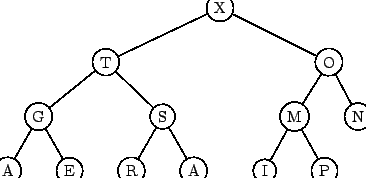
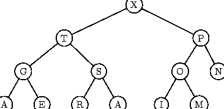
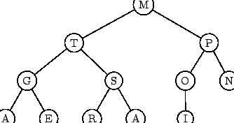
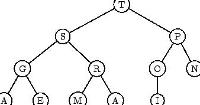

Of course this begs many questions; certainly we can't get a useful algorithm without discussing an implementation. We thus chose a representation of a priority queue as a complete binary tree (Section 3.2.3) in which each node contains an element and its associated key or priority. In addition, we assume that these keys satisfy the heap condition, that:
at each node, the associated key is larger than the keys associated with either child of that node.
Note that the node with the highest priority is necessarily at the root of the tree, thus we can clearly represent a one element priority queue in this way. We now show that the required operations of addition and removal can be done in such a way that the heap condition is still satisfied. Rather than give formal definitions of the operations, we illustrate them with an example, so consider a priority queue whose keys are the letters from the string ``A SORTING EXAMP''. We associate a priority with alphabetical order, with letters at the end of the alphabet being given the highest priority. The corresponding tree is drawn with each key used to label the associated node. Assume for the moment that Fig. 3.8, without the letter ``P'' represents an intermediate stage in the construction; you can certainly check that it satisfies the heap condition, and consider the situation when the letter ``P'' is added to this priority queue formed from the earlier letters from our string. The result is the complete binary tree shown in Fig. 3.8. To maintain the tree as a complete binary tree, there was no choice about where the new node was created, and the new tree no longer satisfies the heap condition. To restore that, we allow interchanges which permit the new node, with key ``P'' to move up the tree, swapping places with elements whose priority is lower. Doing this set of swaps gives Fig. 3.9, which now does satisfy the heap condition.
|
 |
|
 |
The ``remove'' operation is similar; we first get the shape right, and
then restore the heap condition. Since removing an element leaves a
complete binary tree with one fewer element, the first step can be
done by removing the root element, and replacing it by the last
element in the tree. This is shown in Fig. 3.10,
where the remove operation is applied to the priority queue of
Fig 3.9. In order to restore the heap condition, the new
root element must be allowed to ``drop down'' the tree until the tree
satisfies the heap condition again. At each stage, if the heap
condition is violated, the root element is swapped for the larger of
its two children, thus restoring the heap condition at that level.
the resulting priority queue is shown in Fig 3.11.
|
 |
|
 |
Finally note that in Example 3.5 we presented an array-based implementation of a complete binary tree in which moving up and down the tree was efficient. Certainly both the ``add'' and ``remove'' operations can be implemented in a time proportional to the depth of the tree, and hence in time O(log n) where n is the number of elements to be sorted. Since we do a total of 2n such operations in a complete implementation of Heapsort, we thus get a total time of O(n log n).
We already saw in Section 2.6 that we were not going to improve on this order of magnitude. And in fact the time constant is worse than that for quicksort by a factor of about 2, so quicksort remains the method of choice. So what is special about Heapsort? Note that we always complete the ``add'' and ``remove'' operations in O(log n) time; there is no ``worst case''. Thus unlike quicksort, the worst case running time of Heapsort is the same as its average running time.